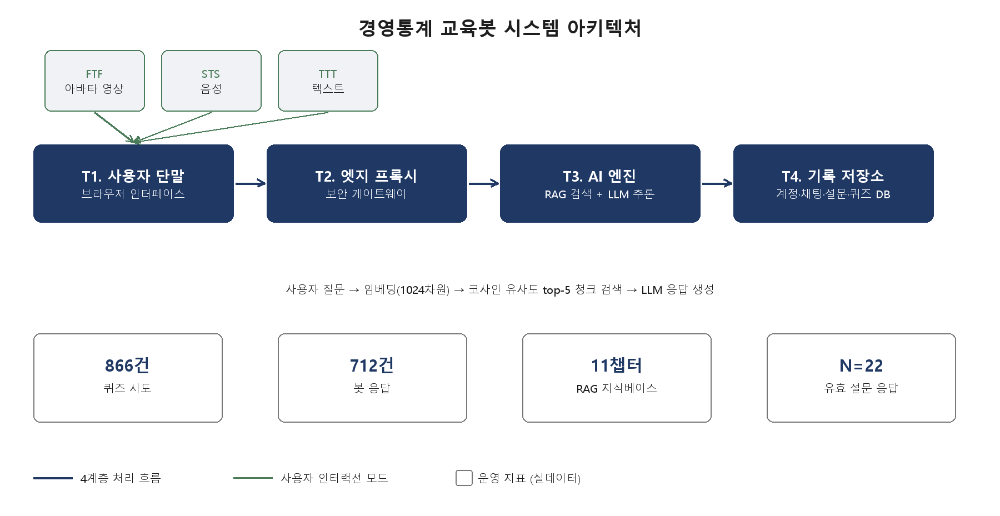
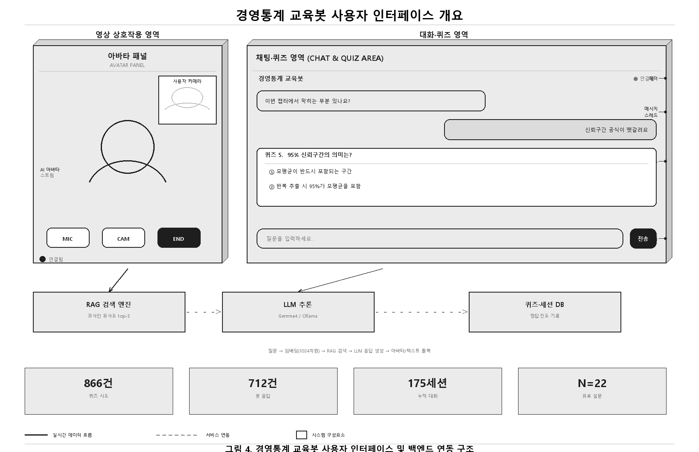
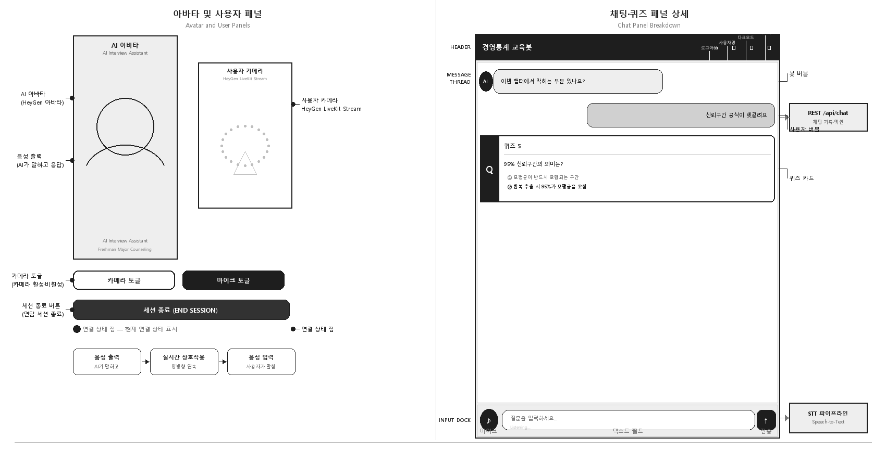

경영통계 교육을 위한 퀴즈 연동 멀티모달
AI 티칭봇의 설계와 학습자 인식
Design and Learner Perception of a Quiz-Integrated Multimodal AI Teaching Bot for Business Statistics Education
1 차의과학대학교 일반대학원 AI헬스케어융합학과 · 2 차의과학대학교 헬스케어융합학부 경영학전공
요 약
대학 경영통계 교육에서는 학습자의 개념 이해 어려움과 즉각적 피드백 부재가 학습 동기와 성취를 가로막는 구조적 장벽으로 지적되어 왔다. LLM과 RAG 기술의 발전으로 교과에 특화된 AI 학습 지원 시스템 설계가 가능해졌으나, 퀴즈 기반 형성평가와 AI 튜터링을 하나의 시스템으로 통합하고 그 효과를 실증한 사례는 아직 드물다. 이에 본 연구는 차의과학대학교 경영통계 교과목을 대상으로, 11챕터 분량의 RAG 기반 AI 튜터와 챕터별 형성평가 퀴즈를 결합한 멀티모달 AI 티칭봇을 설계·구현하였다. 이 챗봇은 FTF·STS·TTT 세 가지 대화 모드와 교수자 아바타를 함께 제공하여 학습자가 상황에 맞는 방식으로 소통할 수 있도록 하였다. 학습자 인식은 6개 구인, 14개 문항(5점 리커트)으로 측정하였으며, 유효 응답 22건을 분석한 결과 종합 평균 4.26점의 긍정적 인식이 확인되었다. 구인별로는 퀴즈-챗봇 연동이 4.48점으로 가장 높았고 학습몰입이 3.98점으로 가장 낮았으며, 윌콕슨 검정에서 교수자 실재감을 제외한 13개 문항이 기준점보다 유의하게 높았다(p<.05). 스피어만 상관분석에서는 호기심(ρ=.634), 이해도(ρ=.661), 재사용 의사(ρ=.589), 일관된 설명(ρ=.582)이 전반 만족도를 예측하는 핵심 요인으로 나타났다.
색인어 : AI 티칭봇, 퀴즈-챗봇 연동, 형성평가, 멀티모달 인터페이스, 교수자 실재감, 경영통계 교육
ABSTRACT
Two persistent barriers, conceptual difficulty and the lack of immediate feedback, continue to undermine learner motivation in university business statistics courses. Recent advances in large language models and retrieval-augmented generation now make subject-specific AI tutoring feasible, yet few systems integrate quiz-based formative assessment with AI tutoring and empirically test the resulting learning effects. This study addresses that gap by designing and implementing a multimodal AI teaching bot for a business statistics course at CHA University, built around an eleven-chapter RAG-based tutor paired with chapter-level formative quizzes. The bot offers three interaction modes—a face-to-face avatar, speech-to-speech, and text-to-text—together with an instructor avatar, so that learners can choose whichever mode fits their situation best. Learner perceptions were assessed across six constructs and fourteen items on a five-point Likert scale, and analysis of twenty-two valid responses yielded an overall mean of 4.26. Quiz-chatbot integration scored highest at 4.48, learning flow scored lowest at 3.98, and Wilcoxon tests showed that thirteen of the fourteen items significantly exceeded the midpoint, with teacher presence as the sole exception. Spearman correlation analysis further identified curiosity, perceived understanding, intention to reuse, and consistency of explanation as the strongest predictors of overall satisfaction.
Keyword : AI Teaching Bot, Quiz-Chatbot Integration, Formative Assessment, Multimodal Interface, Teacher Presence, Business Statistics Education
Ⅰ. 서 론
1-1 연구 배경
경영통계는 경영학 교과 과정에서 데이터 기반 의사결정 역량의 토대를 제공하는 핵심 과목이면서도, 학습자가 가장 큰 어려움을 호소하는 과목 중 하나로 꼽힌다[1]. 개념의 추상성과 수식 중심의 논리 전개, 그리고 실제 의사결정 문제와의 연결을 스스로 찾아내야 하는 인지적 부담이 그 주된 원인으로 지목된다[2]. 전통적인 강의 방식에서는 교수자가 개념을 일방적으로 전달하는 구조이다 보니, 학습자가 이해 여부를 즉각 확인하거나 오류에 대한 피드백을 받을 기회가 제한된다[3]. 이러한 제약이 누적되면 오개념이 쌓이고, 결국 학습 동기와 성취를 모두 저해하는 구조적 장벽으로 작용한다. 형성평가는 바로 이 한계를 보완하는 핵심 기제로, 학습 과정에서 이해도를 점검하고 즉각적인 피드백을 제공함으로써 학습 궤적을 실시간으로 교정한다[4]. 실제로 Hattie와 Timperley[5]의 메타분석은 즉각 피드백의 학습 성취 효과 크기(d=0.73)를 강력한 실증 근거로 제시한 바 있다. 그러나 수강 인원이 많은 강의 환경에서 교수자 한 명이 학습자 개개인에게 맞춤형 피드백을 제공하는 일은 구조적으로 쉽지 않다[6].
대규모 언어모델(LLM)과 검색 증강 생성(RAG)[7] 기술의 발전은 이러한 문제에 새로운 해결 가능성을 열어주고 있다. 특히 퀴즈를 푼 직후 틀린 문제에 대해 곧바로 해설을 요청할 수 있는 퀴즈-챗봇 연동 구조는, 형성평가의 피드백 기능을 AI 튜터로 확장한 설계라 할 수 있다. 그런데 기존 AI 챗봇 연구들은 이러한 퀴즈 연동형 설계를 충분히 다루지 않았다는 한계가 있다[8]. 본 연구는 이 지점에서 출발하여, 퀴즈와 AI 튜터링을 하나의 시스템으로 통합하고 그 학습 효과를 실증적으로 확인하고자 한다.
1-2 연구 질문
분석은 기술 통계, 단측 t-검정, 윌콕슨 부호순위 검정, 단순회귀, 스피어만 순위상관에 한정하며 인과 추론은 후속 연구의 과제로 남긴다. 연구 맥락은 차의과학대학교 경영학과 경영통계 수업(2026년 1학기)이다.
1-3 연구의 기여 및 논문 구성
본 연구는 크게 세 가지 측면에서 학술적·실천적 기여를 갖는다. 첫째, 퀴즈와 AI 튜터링을 연동한 형성평가라는 새로운 설계 원칙을 제안하고, 이를 실제 강의에 적용한 구현 사례를 보고한다. 둘째, 6개 구인 14문항으로 구성된 설문 체계를 통해 교육봇에 대한 학습자 인식의 다차원적 구조를 탐색하고, 서열형 자료에 적합한 윌콕슨 검정과 스피어만 상관분석을 적용하여 분석의 엄밀성을 높였다. 셋째, 사전 통계 지식 수준이 학습자 인식에 미치는 조절 효과를 탐색적으로 확인함으로써, 교육봇의 효과가 학습자 특성에 따라 달라질 수 있음을 보여준다. 이러한 기여를 바탕으로, 이어지는 장에서는 선행연구를 검토한 뒤 연구방법과 결과를 제시하고 그 함의를 논의한다.
Ⅱ. 선행 연구
2-1 AI 기반 교육 챗봇과 형성평가
AI 챗봇을 교육 맥락에 적용한 연구는 정보 제공형과 학습 지원형으로 구분된다[1]. 형성평가는 학습 과정 중 이해 여부를 점검하는 평가로 총괄평가와 구분되며[4], 퀴즈 기반 형성평가는 인출 연습 효과를 통해 장기 기억 공고화를 촉진한다[11]. Swacha와 Gracel[8]은 RAG 챗봇이 형성평가 피드백 도구로 활용될 때 학습 지속성과 개념 이해가 향상됨을 보고하였다. 본 연구의 퀴즈 연동 챗봇 역시 이러한 형성평가 피드백 도구의 연장선에 있으며, 퀴즈 직후의 즉각적 해설 제공에 초점을 둔다는 점에서 기존 연구와 구별된다.
2-2 RAG 기반 교과 특화 AI 튜터
LLM은 도메인 특화 정보에서 환각(hallucination)이 빈번히 발생한다[12]. RAG[7]는 외부 지식베이스를 검색하여 응답의 사실성을 담보하며, 청크 분할 전략과 검색 임계값 설정이 응답 품질에 결정적 영향을 미친다[13]. Yusuf 외[14]는 교육 분야 AI 대화 에이전트의 개념 체계를 종합하여 도메인 지식 기반과 피드백 기능이 핵심 설계 요소임을 제시하였다. 본 연구의 AI 튜터 역시 경영통계 교재 기반의 청크 검색과 임계값 설정을 통해 환각을 억제하도록 설계되었다(Ⅲ장 참조).
2-3 멀티모달 에이전트와 교수자 실재감
Zhang과 Pan[10]은 시각·청각 구현이 학습 참여와 사회적 실재감을 촉진함을 종합하였고, Mayer와 DaPra[16]는 아바타가 학습자의 이해도를 유의하게 높임을 실험적으로 입증하였다. 교수자 실재감(teacher presence)은 탐구공동체 모형[18]에서 학습 설계·촉진·직접 교수 기능으로 정의되며, AI 아바타가 이 기능을 대리한다[9]. 이에 본 연구는 아바타를 포함한 세 가지 대화 모드를 통해 교수자 실재감을 구현하고, 그 인식 수준을 직접 측정하고자 한다.
2-4 학습몰입과 퀴즈 연동 AI 설계의 필요성
Csikszentmihalyi[19]의 몰입(flow) 이론은 도전과 능력의 균형 시 최적 학습 경험이 발생함을 설명하며, 퀴즈 점수 체계가 몰입을 촉진한다는 증거가 축적되고 있다[21]. AI 챗봇에서 몰입은 응답 지연·모호한 답변에 의해 저해되며[22], 즉각적이고 정확한 피드백이 몰입 유지의 핵심 조건이다[23]. 본 연구는 퀴즈-AI 연동이라는 새로운 설계 원칙을 통해 이 공백을 메우고자 한다.
Ⅲ. 연구 방법
3-1 시스템 설계 — 4계층 아키텍처
본 시스템은 사용자 단말(T1), 엣지 프록시(T2), AI 엔진(T3), 기록 저장소(T4)의 4계층 아키텍처로 구성된다.

표 1. 4계층 시스템 아키텍처 구성
| 계층 | 주요 역할 | 저장 데이터 |
|---|---|---|
| T1 (사용자 단말) | 브라우저 인터페이스: 카메라·마이크·텍스트 입출력 | 로그인 토큰만 |
| T2 (엣지 프록시) | 보안 게이트웨이: 외부→내부 연결 중계 | 없음 |
| T3 (AI 엔진) | RAG 검색 + LLM 추론 (자체 GPU, Gemma4/Ollama) | 임시 처리 데이터 |
| T4 (기록 저장소) | 계정·채팅·설문·퀴즈·대시보드 관리 | 사용자·학습·설문 데이터 |
T3의 RAG 파이프라인은 경영통계 교재 11챕터를 지식베이스로 구축하였다. 사용자의 질문은 임베딩 모델[15]을 통해 1024차원 벡터로 변환된 뒤, 코사인 유사도가 가장 높은 상위 5개 청크를 검색하는 방식으로 처리된다. 검색된 청크의 유사도가 임계값(0.25)에 미치지 못하면 ‘교수님께 직접 여쭤보세요’라는 안내 문구를 출력하도록 하여 환각 발생을 방지하였다. 실제 운영 기간 동안 866건의 퀴즈 시도와 712건의 봇 응답이 기록되었다. 한편 멀티모달 인터페이스는 아바타 영상(FTF), 음성(STS), 텍스트(TTT)의 세 모드를 단일 백엔드에서 통합 운영하도록 설계되었다. 세 모드는 모두 동일한 RAG-LLM 경로를 거치기 때문에 응답의 사실적 정확성이 모드와 무관하게 동일하게 보장되며, 음성과 화면 텍스트는 별도 필드로 분리하여 관리된다.


3-2 6구인 측정 체계
6개 구인(A–F) 14문항으로 구성된 설문 체계를 제안한다(표 2).
표 2. 6구인 측정 체계
| 구인 | 문항 | 내용 | 이론적 근거 |
|---|---|---|---|
| A. 퀴즈-챗봇 연동 | Q1, Q2 | 퀴즈 즉시 질문 / 해설 설명 충분성 | 인출 연습·즉각 피드백[5][11] |
| B. 멀티모달 인터랙션 | Q3 | 모드 전환 유용성 | 멀티모달 에이전트[10][16] |
| C. 교수자 실재감 | Q4–Q6 | 교수자 존재감 / 분위기 / 일관된 설명 | 탐구공동체 모형[18]·의인화[9] |
| D. 정확성·안전감 | Q7, Q8 | 답변 정확성 / 한계 솔직한 인정 | RAG 사실성[7]·적정 신뢰[24] |
| E. 학습몰입 | Q9, Q10 | 시간 몰입감 / 호기심 자극 | 몰입 이론[19] |
| F. 인지된 학습효과 | Q11–Q14 | 이해도 / 자신감 / 재사용의사 / 전반만족도 | 인지된 유용성[25] |
3-3 설문 설계 및 분석 절차
설문은 인구통계 5문항, 사전 통계 수준 1문항(1~4점), 6개 구인 14문항(5점 리커트), 자유응답 2문항으로 구성하였다. 본 설문은 일부 지원자만을 대상으로 한 것이 아니라 해당 학기 경영통계 수강생과 청강생 전원을 대상으로 한 전수조사로 실시되었다. 즉 수업 운영 자체가 곧 실증의 현장이었으며, 본 연구는 통제된 실험실 연구가 아니라 실제 강의에 내장된 현장 실증(임상시험에 준하는 현장 실험)의 성격을 갖는다. 총 28건의 응답이 수집되었으나, 응답 소요 시간이 60초 미만인 6건은 부주의·불충분 응답으로 간주하여 제외하고, 최종적으로 22건의 유효 응답을 분석하였다. 분석은 기술통계를 확인한 뒤 단측 t-검정(H0: μ=3.5)과 윌콕슨 부호순위 검정을 차례로 실시하고, 이어서 단순회귀와 스피어만 순위상관을 통해 만족도 예측 요인을 살핀 다음, 마지막으로 탐색적 다중회귀로 결과를 종합하는 순서로 진행하였다.
Ⅳ. 연구 결과
4-1 표본 기술
최종 분석 대상은 22명이다. 학년별로는 4학년이 54.5%로 가장 많았고 3학년이 31.8%로 그다음이었으며, 성별로는 여성이 59.1%를 차지하였다. 전공은 경영학(40.9%)과 심리학(36.4%)이 주를 이루었고, 디지털보건의료(13.6%)와 미디어커뮤니케이션(9.1%)이 뒤를 이었다. 사전 통계 수준은 1점부터 4점까지 각각 3명, 9명, 7명, 3명으로, 중간 수준(2~3점)에 다수가 분포하였다. 주로 사용한 대화 모드는 텍스트(TTT)가 82%로 압도적이었고 아바타(FTF) 14%, 음성(STS) 4%가 그 뒤를 이었으며, 응답자의 68%는 학습 중 모드를 한 번 이상 전환한 경험이 있었다.
4-2 문항별 t-검정 및 윌콕슨 부호순위 검정 (H0: μ=3.5)
표 3은 14개 문항에 대해 H0: μ=3.5, H1: μ>3.5의 단측 검정 결과이다. Q4(교수자 실재감)만 두 검정 간 불일치(t: p=.047 유의, 윌콕슨: p=.053 비유의)가 관찰되었다.
표 3. 문항별 t-검정 및 윌콕슨 부호순위 검정 결과 (N=22)
| 문항 | 평균(SD) | t | p(t) | W | p(W) | 유의 |
|---|---|---|---|---|---|---|
| Q1. 퀴즈 즉시 질문 | 4.50 (0.60) | 7.849 | <.001 | 247.5 | <.001 | ** / ** |
| Q2. 퀴즈 해설 설명 | 4.45 (0.67) | 6.673 | <.001 | 242.0 | <.001 | ** / ** |
| Q3. 모드 전환 유용성 | 4.45 (0.60) | 7.515 | <.001 | 247.0 | <.001 | ** / ** |
| Q4. 교수자 실재감 † | 3.82 (0.85) | 1.750 | .047* | 174.0 | .053 | * / n.s. |
| Q5. 따뜻한 분위기 | 4.59 (0.67) | 7.681 | <.001 | 245.0 | <.001 | ** / ** |
| Q6. 일관된 설명 | 4.45 (0.60) | 7.515 | <.001 | 247.0 | <.001 | ** / ** |
| Q7. 정확성 | 4.41 (0.59) | 7.223 | <.001 | 246.5 | <.001 | ** / ** |
| Q8. 한계 인정 | 3.91 (1.02) | 1.882 | .037* | 190.5 | .016* | * / * |
| Q9. 학습 몰입 | 3.86 (0.83) | 2.046 | .027* | 182.5 | .028* | * / * |
| Q10. 호기심 자극 | 4.09 (0.75) | 3.695 | .001** | 218.0 | .001** | ** / ** |
| Q11. 이해도 향상 | 4.32 (0.72) | 5.358 | <.001 | 233.5 | <.001 | ** / ** |
| Q12. 자신감 | 4.05 (0.72) | 3.542 | .001** | 216.5 | .001** | ** / ** |
| Q13. 재사용 의사 | 4.50 (0.60) | 7.849 | <.001 | 247.5 | <.001 | ** / ** |
| Q14. 전반 만족도 | 4.27 (0.63) | 5.743 | <.001 | 238.0 | <.001 | ** / ** |
† Q4는 t-검정(p=.047)과 윌콕슨 검정(p=.053)이 불일치. ** p<.01, * p<.05, n.s. 비유의.
Q4의 평균은 3.82로 기준점(3.5)보다 높지만, 표준편차가 0.85로 커서 응답이 흩어진 탓에 t-검정에서는 통계적으로 유의한 것으로 나타난 반면, 서열형 자료에 적합한 윌콕슨 검정에서는 p=.053으로 5% 유의 수준을 충족하지 못하였다. 서열형 응답에서는 평균과 표준편차에 기반한 t-검정보다 윌콕슨 검정의 결과를 우선적으로 해석하는 것이 통계적으로 더 타당하다. 이는 교수자 실재감에 대한 인식이 다른 구인보다 응답자 간 편차가 크다는 점을 시사한다.
4-3 구인별 평균 및 사전 통계 수준 비교
종합 평균 4.26/5의 긍정적 인식이 확인되었다. 구인 A(4.48) 최고, 구인 E(3.98)가 유일하게 4점 미만이었다(표 4).
표 4. 구인별 평균 및 사전 통계 수준 비교
| 구인 (문항) | 전체 N=22 | 사전低 n=12 (수준 1–2) | 사전高 n=10 (수준 3–4) |
|---|---|---|---|
| A. 퀴즈-챗봇 연동 (Q1,Q2) | 4.48 | 4.50 | 4.45 |
| B. 멀티모달 인터랙션 (Q3) | 4.45 | 4.33 | 4.60 |
| C. 교수자 실재감 (Q4–Q6) | 4.29 | 4.42 | 4.13 |
| D. 정확성·안전감 (Q7,Q8) | 4.16 | 4.17 | 4.15 |
| E. 학습몰입 (Q9,Q10) | 3.98 | 4.08 | 3.85 |
| F. 인지된 학습효과 (Q11–Q14) | 4.29 | 4.44 | 4.10 |
| 종합 평균 | 4.26 | 4.34 | 4.16 |
사전 통계 수준이 낮은 집단(1–2점, n=12)의 종합 인식(4.34점)이 높은 집단(3–4점, n=10, 4.16점)보다 다소 높게 나타났다. 격차는 크지 않으나 그 방향은 사전 지식이 부족한 학습자일수록 새로운 학습 도구의 효과를 더 크게 체감한다는 전문성 역전 효과[26]와 일치한다. 다만 멀티모달 인터랙션(B)에서는 오히려 사전 지식이 높은 집단의 평가가 더 높아(4.33 대 4.60) 구인별로 양상이 달랐으며, 사전 지식이 높은 집단에서는 교육봇이 제공하는 설명의 깊이가 충분하지 않았을 가능성도 함께 고려할 필요가 있다.
그림 4. 구인별 평균 (5점 척도, n=22)
막대 길이 = 5점 만점 대비 비율.
그림 5. 사전 통계수준별 효과 (5점 척도)
4-4 만족도 예측 요인 — 단순회귀 및 스피어만 분석
Q14 전반 만족도를 종속변수로 개별 단순회귀와 스피어만 ρ를 산출하였다(표 5).
표 5. 단순회귀 및 스피어만 분석 (종속변수: Q14 전반만족도, N=22)
| 요인 | β (기울기) | R² | p(F) | ρ (스피어만) | p(ρ) |
|---|---|---|---|---|---|
| Q11. 이해도 향상 | 0.565 | 0.412 | .001** | 0.661 | .001** |
| Q10. 호기심 자극 | 0.546 | 0.422 | .001** | 0.634 | .002** |
| Q13. 재사용 의사 | 0.667 | 0.399 | .002** | 0.589 | .004** |
| Q6. 일관된 설명 | 0.573 | 0.293 | .009** | 0.582 | .005** |
| Q9. 학습 몰입 | 0.330 | 0.190 | .042* | 0.396 | .068 |
| Q5. 따뜻한 분위기 | 0.371 | 0.153 | .072 | 0.349 | .111 |
| Q4. 교수자 실재감 | 0.071 | 0.009 | .669 | 0.074 | .743 |
| Q1,Q2,Q3,Q7,Q8,Q12 | — | <0.14 | >.13 | <0.37 | — |
스피어만 ρ와 단순회귀 R²의 순위가 거의 일치하여, 두 분석 방법 간 방향성이 일관됨을 확인할 수 있다. 스피어만은 서열형 리커트 자료에 적합한 비모수 방법이므로, 본 연구에서는 이를 주된 해석 기준으로 삼았다. 한편 14개 예측 요인을 모두 포함한 다중회귀(k=13)는 수정 R²=0.46, F검정 p=.111로 과적합 양상을 보여, 그 결과는 확정적이라기보다 탐색적 참고 수준으로 해석하는 것이 타당하다.
Ⅴ. 논의 및 결론
5-1 인식 격차의 가능한 설명
4장에서 관찰된 인식 격차, 즉 학습몰입(E) 구인의 낮은 점수와 교수자 실재감(Q4) 문항의 t/윌콕슨 불일치는 네 가지 요인이 복합적으로 작용한 결과로 해석된다. 첫째, 답변 속도 지연이나 PC-모바일 전환 시 발생하는 진도 리셋 버그 같은 기술적 한계가 몰입 경험을 저해했을 수 있다. 둘째, ‘교수님께 직접 물어보라’는 답변이 예상보다 자주 나온 것에서 드러나듯, RAG 코퍼스가 심화 개념까지는 충분히 다루지 못한 정보 깊이의 한계가 있었다. 셋째, 아바타 음성의 자연스러움이 부족해 분위기 면에서 기대와 다소 어긋났을 가능성이 있다. 넷째, 사전 지식이 높은 집단(3–4점, 4.16점)이 낮은 집단(1–2점, 4.34점)보다 다소 낮은 점수를 보인 것은 심화 내용에 대한 요구가 충분히 충족되지 못했음을 시사하며, 이는 전문성 역전 효과[26]와도 맥이 닿는다.
5-2 결과 요약과 함의
본 연구의 두 연구질문에 대한 답은 다음과 같이 정리된다. 첫째, 4계층 아키텍처를 기반으로 FTF·STS·TTT 세 모달리티와 퀴즈 연동 형성평가를 하나의 시스템으로 구현하는 것이 실제로 가능함을 확인하였다. 둘째, 6개 구인 중 퀴즈-챗봇 연동(A, 4.48점)이 가장 높은 인식을 얻었고 학습몰입(E, 3.98점)이 가장 낮았으며, 전반 만족도는 이해도(ρ=.661)·호기심(ρ=.634)·재사용 의사(ρ=.589)·일관된 설명(ρ=.582)에 의해 가장 잘 설명되었다. 아울러 교수자 실재감(Q4) 문항에서 나타난 t검정과 윌콕슨 검정의 불일치는, 서열형 자료를 분석할 때 통계 방법의 선택이 결과 해석에 실질적인 영향을 줄 수 있음을 다시 한번 보여준다.
이러한 결과는 이론적으로도 실무적으로도 의미가 있다. 이론적으로는, 퀴즈와 AI 튜터링을 연동한 순환 학습 구조가 형성평가 이론과 AI 튜터링 연구가 만나는 새로운 접점이 될 수 있음을 보여준다. 실무적으로는, 교육봇을 설계하는 이들에게 퀴즈-챗봇 연동을 핵심 기능으로 우선 구현하고, RAG 코퍼스를 심화 개념까지 확장하며, 응답 지연을 최소화하는 것을 권고할 수 있다. 특히 응답 지연과 정보 깊이 문제는 본 연구에서 확인된 학습몰입 저하의 핵심 원인과 직접 연결되므로, 후속 설계에서 최우선으로 다루어야 할 과제로 볼 수 있다.
5-3 연구의 한계
본 연구에는 몇 가지 한계가 있다. 첫째, 본 연구는 단일 강의의 수강생·청강생 전원을 대상으로 한 전수조사이므로 자기선택 편향은 작지만, N=22의 소규모 단일 사례라는 점에서 결과의 외적 타당도에는 여전히 제한이 있다. 둘째, 13개 요인을 모두 포함한 다중회귀는 표본 대비 변수가 많아 과적합 경향(n/k≈1.7, VIF>5)을 보였다. 셋째, 진도 리셋 버그와 같은 기술적 결함이 학습몰입(E) 구인의 점수를 실제보다 낮게 보였을 가능성을 배제할 수 없다. 넷째, Cronbach’s α나 확인적 요인분석과 같은 측정 도구의 신뢰도·타당도 검증 절차를 거치지 못하였다.
5-4 후속 연구 방향
이러한 한계를 보완하기 위해 다음과 같은 후속 연구를 제안한다. 첫째, 표본을 100명 이상으로 확장하고 확인적 요인분석과 순서형 로지스틱 회귀를 적용하여 측정 모형의 타당성을 검증할 필요가 있다. 둘째, 퀴즈 피드백 방식을 즉각 해설형과 힌트형으로 나누어 실험적으로 비교함으로써 어떤 방식이 더 효과적인지 확인할 수 있다. 셋째, 사전 지식 수준에 따라 RAG 응답의 깊이를 조절하는 적응형 설계를 검토할 필요가 있다. 넷째, 퀴즈 정답률이나 AI 도움 요청률 같은 실제 성취 데이터와 설문 구인 간의 관계를 분석하면 더 풍부한 시사점을 얻을 수 있을 것이다. 본 연구에서 제안한 6구인 측정 체계는 이러한 후속 연구를 통해, 개념 집약적인 다른 교과목에도 적용 가능한 교육 AI 설계 원칙으로 발전할 수 있을 것이다.
감사의 글
This research includes results partly supported by the “Gyeonggi Regional Innovation System & Education Project (Gyeonggi RISE Project)”, supported by the Ministry of Education and Gyeonggi Province (grant No. 20250093).
참고문헌
- M. Dawood, “Assessing The Effectiveness Of Chatbots In Providing Personalized Academic Advising,” Studies In Technology Enhanced Learning, Vol. 4, No. 1, Oct. 2024.
- J. Garfield and D. Ben-Zvi, Developing Students’ Statistical Reasoning, Springer, 2008.
- J. Garfield, “The Challenge of Developing Statistical Reasoning,” J. of Statistics Education, Vol. 10, No. 3, 2002.
- P. Black and D. Wiliam, “Assessment and Classroom Learning,” Assessment in Education, Vol. 5, No. 1, pp. 7-74, 1998.
- J. Hattie and H. Timperley, “The Power of Feedback,” Review of Educational Research, Vol. 77, No. 1, pp. 81-112, 2007.
- D. Nicol and D. Macfarlane-Dick, “Formative Assessment and Self-Regulated Learning,” Studies in Higher Education, Vol. 31, No. 2, pp. 199-218, 2006.
- P. Lewis et al., “Retrieval-Augmented Generation For Knowledge-Intensive NLP Tasks,” NeurIPS, Vol. 33, pp. 9459-9474, 2020.
- J. Swacha and M. Gracel, “RAG Chatbots For Education: A Survey Of Applications,” Applied Sciences, Vol. 15, No. 8, 2025.
- H. S. Yu, “Trust Formation In AI Human Chatbots,” Knowledge & Liberal Arts, Vol. 17, pp. 1083-1126, 2025.
- Y. Zhang and W. Pan, “A Scoping Review Of Embodied Conversational Agents In Education 2014-2024,” Interactive Learning Environments, Vol. 33, No. 7, pp. 4566-4587, 2025.
- H. L. Roediger and J. D. Karpicke, “The Power of Testing Memory,” Perspectives on Psychological Science, Vol. 1, No. 3, pp. 181-210, 2006.
- Z. Ji et al., “Survey Of Hallucination In NLG,” ACM Computing Surveys, Vol. 55, No. 12, 2023.
- Z. Li et al., “RAG For Educational Application: A Systematic Survey,” Computers and Education: AI, Vol. 8, 2025.
- H. Yusuf et al., “Pedagogical AI Conversational Agents In Higher Education,” Educational Technology R&D, Vol. 73, No. 2, pp. 815-874, 2025.
- J. Chen et al., “M3-Embedding: Multi-Linguality, Multi-Functionality, Multi-Granularity Text Embeddings,” Findings of ACL 2024, pp. 2318-2335.
- R. E. Mayer and C. S. DaPra, “An Embodiment Effect In Computer-Based Learning,” J. of Experimental Psychology: Applied, Vol. 18, No. 3, pp. 239-252, 2012.
- P. Pataranutaporn et al., “AI-Generated Characters For Personalized Learning,” Nature Machine Intelligence, Vol. 3, No. 12, pp. 1013-1022, 2021.
- D. R. Garrison et al., “Critical Inquiry in a Text-Based Environment,” The Internet and Higher Education, Vol. 2, No. 2-3, pp. 87-105, 2000.
- M. Csikszentmihalyi, Flow: The Psychology of Optimal Experience, Harper & Row, 1990.
- G. Hamari et al., “Is Gamification Effective? A Meta-Analysis,” HICSS 2014, pp. 3025-3034.
- S. Deterding et al., “From Game Design Elements to Gamefulness,” MindTrek 2011, pp. 9-15.
- S. H. Lim et al., “Utilization Of Generative AI In University Students’ Learning,” J. of Product Research, Vol. 42, No. 4, 2024.
- M. S. Kim and C. M. Koo, “ChatGPT For Tourism Information Search Service,” Information Systems Review, Vol. 26, No. 1, pp. 119-149, 2024.
- J. D. Lee and K. A. See, “Trust In Automation: Designing For Appropriate Reliance,” Human Factors, Vol. 46, No. 1, pp. 50-80, 2004.
- F. D. Davis, “Perceived Usefulness, Perceived Ease of Use, and User Acceptance of IT,” MIS Quarterly, Vol. 13, No. 3, pp. 319-340, 1989.
- S. Kalyuga et al., “The Expertise Reversal Effect,” Educational Psychologist, Vol. 38, No. 1, pp. 23-31, 2003.
부록 A. 설문 문항 (총 22문항)
A.1 6구인 학습자 인식 (Q1–Q14) — 5점 리커트 (1=전혀 아니다, 5=매우 그렇다)
부록 표 A1. 6구인 14개 설문 문항
| 번호 | 구인 | 문항 |
|---|---|---|
| Q1 | A | 퀴즈를 풀다 모르는 문제가 생기면 챗봇에 즉시 질문할 수 있어서 좋았다. |
| Q2 | A | 챗봇이 퀴즈 문제를 충분히 이해하기 쉽게 설명해 주었다. |
| Q3 | B | 텍스트·음성·영상 모드를 자유롭게 전환할 수 있어서 학습에 도움이 되었다. |
| Q4 | C | 챗봇을 사용하는 동안 교수님이 직접 설명해 주시는 것 같은 느낌이 들었다. |
| Q5 | C | 챗봇과의 대화가 따뜻하고 편안한 분위기를 만들어 주었다. |
| Q6 | C | 챗봇은 여러 번 질문해도 일관된 방식으로 설명해 주었다. |
| Q7 | D | 챗봇이 제공하는 통계 개념 설명이 정확하다고 느꼈다. |
| Q8 | D | 챗봇이 잘 모르는 부분은 솔직하게 인정하고 적절히 안내해 주었다. |
| Q9 | E | 챗봇을 사용하면서 시간 가는 줄 모르고 학습에 집중하게 되었다. |
| Q10 | E | 챗봇을 통해 통계에 대한 호기심이 생겼다. |
| Q11 | F | 챗봇을 사용한 후 통계 개념 이해가 향상된 것 같다. |
| Q12 | F | 챗봇을 사용한 후 통계 문제를 스스로 풀 수 있다는 자신감이 생겼다. |
| Q13 | F | 다음 학기에도 이런 AI 챗봇을 학습에 활용하고 싶다. |
| Q14 | F | 전반적으로 이 경영통계 챗봇에 만족한다. (회귀분석 종속변수) |
A.2 자유응답: Q15 가장 도움이 된 점 / Q16 가장 아쉬웠던 점 (각 2,000자 이내, 선택 입력)
A.3 처리 절차: 발화 3턴 이상 세션 종료 시 자동 표시. 응답 60초 미만은 flag_too_fast=1 처리.
저자 약력
1996: 한국과학기술원 산업경영학 석사 / 2008: 한국과학기술원 경영공학박사
2000–2004: 한국신용정보(NICE) / 2005–2009: 삼정KPMG / 2010–2014: 액센츄어
2016–현재: 차의과학대학교 경영학 전공 주임교수 / 2024–현재: 일반대학원 AI헬스케어융합학과 교수
관심분야: 재무금융, 시계열예측, 생성형AI, 경영통계 교육, 헬스케어융합
※ 성봉주·이규성·김진솔·이효주·김정환 저자 약력은 확정 후 보완 예정.